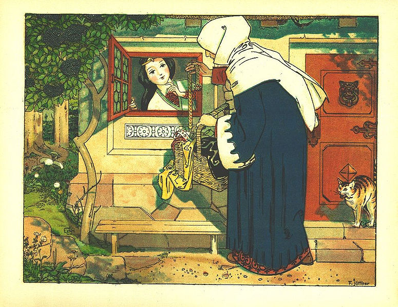
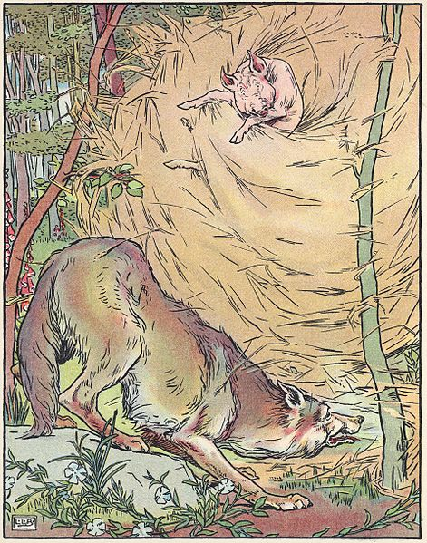
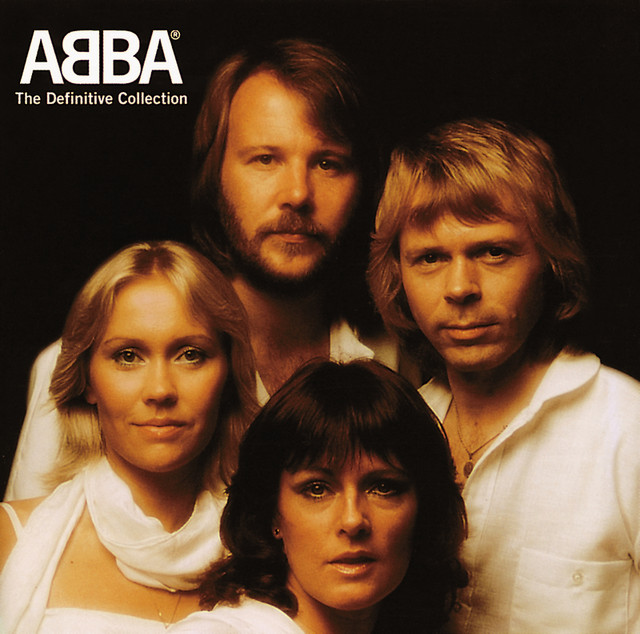

O position: relative; desloca um elemento em relação a sua posição original,
mas os demais elementos ao redor ainda são posicionados como se ele tivesse sido posicionado
com o padrão (position: static;).
O position: sticky; muda o posicionamento do elemento
se o seu container estiver parcialmente fora da tela (normalmente por causa de scrolling).
O elemento pode ser empurrado para cima ou para baixo dentro de seu container para que não
apareça fora da tela.
O position: fixed; retira o elemento do fluxo normal e o coloca numa posição
fixa na tela.
O position: absolute; retira o elemento do fluxo normal, mas o coloca numa
posição fixa em relação a um outro elemento que o contenha. No caso, será escolhido o
primeiro elemento que o contenha (pai, avô, etc) que não tenha o posicionamento
static ou o elemento <body> em último caso.
A propriedade position define como o elemento será posicionado.
Use-a junto com as propriedades top, bottom, left
e/ou right para controlar onde ele vai ser posicionado.
Nesta página, temos exemplos de todos esses casos:
Os títulos <h1> estão com position: sticky;
para ficarem visíveis na parte de cima dos elementos <article>
que os contêm mesmo quando forem "scrollados" parcialmente para fora da tela.
O elemento <article> com a música da
Lady Gaga (Bad Romance)
tem dois elementos com position: sticky; para ficarem no topo.
A <div> com a mensagem de cookies tem position: fixed;.
A <div> de estações do ano tem position: absolute;
e não tem elemento predecessor que não seja position: static;.
Os elementos <blockquote> têm position: relative;
para que as aspas dentro deles, que têm position: absolute;, sejam
posicionadas corretamente.
O título da tabela periódica está com
position: static; explícito, o que
sobrepõe e remove o position: sticky;.
Todos os demais elementos são position: static; por padrão.
Branca de Neve e os 7 anões

Branca de Neve (Franz Jüttner, 1904)
Era uma vez uma princesa, muito bela e de pele branquinha, chamada Branca de Neve. A mãe de Branca de Neve, uma bondosa rainha, havia morrido quando ela era ainda um bebê.
Branca de Neve andou muito pela floresta, afastando-se cada vez mais do palácio. Já estava quase anoitecendo quando ela avistou uma casa pequenina e resolveu pedir ajuda.
Os donos da casa voltaram à noite. Eram sete anões que trabalhavam em uma mina de diamantes. Ao entrar em casa, encontraram Branca de Neve dormindo sobre as camas.
— Que mo√ßa linda! — disseram em coro.
Como Branca de Neve não acordou, entenderam que ela estava muito cansada. Decidiram não incomodá-la e resolveram dormir no chão para que ela descansasse.
Na manhã seguinte, quando acordou, Branca de Neve se viu cercada pelos sete anões, mas logo percebeu que era bem-vinda naquela casinha. Então, ela contou aos anões tudo o que havia acontecido.
Os anões ficaram sensibilizados e pediram à princesa que morasse com eles.
Branca de Neve ficou muito feliz e aceitou o convite para morar com os anões.
— Mas tenha cuidado, princesa! — disse o mais velho dos an√µes. — Cedo ou tarde o espelho contará para sua madrasta que voc√™ está viva e ela irá lhe procurar.
A partir daquele dia, Branca de Neve começou uma nova fase de sua vida. Cuidava da casa dos anões enquanto eles trabalhavam na mina.
Certo dia, no castelo, a madrasta malvada perguntou ao espelho mágico:
A rainha entendeu que o soldado a enganara e mandou prendê-lo. Em seguida, resolveu agir por conta própria. Disfarçou-se de velhinha e saiu à procura da casinha dos sete anões.
Quando a velhinha bateu na casa dos sete anões, Branca de Neve não reconheceu a madrasta.
— Oh, bela mo√ßa! Estou tão cansada de andar. D√™-me um pouco de água, por favor.
Gentilmente, Branca de Neve a atendeu e, como forma de gratidão, a velhinha lhe presenteou com uma maçã e foi embora.
A maçã parecia tão apetitosa que Branca de Neve resolveu comê-la, mas, na verdade, estava envenenada e, ao morder o primeiro pedaço, Branca de Neve caiu imóvel.
À noite, quando os anões voltaram, encontraram Branca de Neve caída no chão. Ela estava tão linda que os anões decidiram não enterrá-la. Construíram um caixão transparente de cristal e o colocaram no topo de uma montanha.
Desde esse dia, no castelo, o espelho afirmava:
— No mundo não há mulher mais bela que voc√™, rainha!
O tempo passou e Branca de Neve parecia dormir no caixão de cristal. Ela continuava tão linda como quando estava viva. Um dia, um jovem príncipe, cavalgando no topo daquela montanha, viu o caixão e ficou fascinado pela beleza de Branca de Neve. Vendo os anões em volta, pediu permissão a eles para levar o caixão de cristal e devolver o corpo ao pai da princesa de quem era amigo.
O príncipe contou aos anões que o pai da princesa, sem saber o que estava acontecendo, a procurava dia e noite. Os anões decidiram que eles mesmos levariam o caixão, mas, em um trecho inclinado da estrada, os anões escorregaram e o caixão caiu. Com a queda, o pedaço de maçã saiu da garganta de Branca de Neve e ela acordou.
— Onde estou? O que aconteceu? — perguntou assustada a princesa.
O príncipe e os anões explicaram à Branca de Neve tudo o que havia acontecido. Depois levaram-na ao castelo.
Ao ver Branca de Neve, a rainha ficou com tanta raiva que morreu com um ataque do coração. O rei ficou feliz com a volta da filha e o príncipe aproveitou a ocasião para pedir a mão da princesa em casamento.
Algum tempo depois, o casamento foi celebrado. Os anões foram morar no palácio e todos viveram felizes para sempre.
Os três porquinhos

Os três porquinhos (Leonard Leslie Brooke, 1904)
Era uma vez uma feliz família de porquinhos que tinha três filhos. Os porquinhos foram crescendo e os pais notavam que estavam muito dependentes. Não ajudavam no trabalho de casa nem se esforçavam em nada. Então um dia, eles se reuniram e decidiram que os porquinhos, que já estavam bem crescidos, fossem morar sozinhos. Os pais deram um pouco de dinheiro a cada um, alguns bons conselhos. Os três porquinhos partiram para o bosque em busca de um bom lugar para construir, cada um, a sua casa.
O primeiro porquinho, que era o mais preguiçoso de todos, foi logo optando por construir uma casa rápida e que não necessitasse muito esforço. E construiu uma casa de palha, embora os seus irmãos lhe tenham dito que não era segura.
O segundo porquinho, que era menos preguiçoso que o primeiro mas que tampouco gostava de trabalhar, construiu uma casa de madeira, porque pensava que era mais prática e resistente.
O terceiro porquinho, o mais sensato de todos e mais trabalhador, preferiu construir uma casa de tijolos. Demorou mais para construí-la mas depois de três dias de intenso trabalho a casa estava prontinha.
Os três porquinhos ouviram falar que um perigoso lobo rondava pelo bosque. E não demorou muito para que aparecesse pelas suas casas, em busca de uma boa carne de porco para comer.
O lobo então foi bater na porta da casa do primeiro porquinho. O porquinho, tentando intimidá-lo disse:
– Vá embora seu lobo. Aqui você não vai entrar.
O lobo insistiu e disse:
– Abra logo esta porta ou soprarei e soprarei e a sua casa destruirei.
Vendo que o porquinho não abria a porta da casa, o lobo começou a soprar e soprar tão forte que a casa de palha voou pelos ares. O porquinho, desesperado, acabou correndo em direção à casa de madeira do seu irmão. O lobo correu atrás dele, mas não conseguiu alcançá-lo.
O lobo então foi bater na porta da casa do segundo porquinho. O porquinho, tentando intimidá-lo disse:
– Vá embora seu lobo. Na minha casa de madeira você não vai conseguir entrar.
O lobo insistiu e disse:
– Abram logo esta porta ou soprarei e soprarei e esta casa destruirei.
Vendo que os porquinhos não abriam a porta da casa, o lobo começou a soprar e soprar tão forte que a casa de madeira caiu e ficou em pedaços. Os porquinhos, desesperados, acabaram correndo em direção à casa de tijolo e cimento do outro irmão. O lobo correu atrás deles, mas não conseguiu alcançá-los.
O lobo então foi bater na porta da casa do terceiro porquinho. Os porquinhos tentando intimidá-lo cantaram:
Quem tem medo do lobo mau
Lobo mau, lobo mau?!
Quem tem medo do lobo mau?!
Lobo mau, lobo mau?!
O lobo ficava cada vez mais furioso e gritou:
– Abram a porta, já!!!
E os porquinhos responderam:
– Vá embora seu lobo. Você não conseguirá derrubar esta casa porque está feita com tijolo e cimento.
O lobo insistiu e disse:
– Abram logo esta porta ou soprarei e soprarei e esta casa destruirei.
– Uai, uai, Uaiiiiii!!!!!!!! Gritou o lobo, saindo correndo ao lago para aliviar as suas queimaduras e assustado, nunca mais voltou a molestar os porquinhos.
Era uma vez uma doce menininha. Todos a chamavam de Chapeuzinho Vermelho, porque ela sempre usava uma capa vermelha que a sua avó havia lhe dado de presente.
Um dia, a mãe de Chapeuzinho Vermelho disse:
– Aqui, filha, pegue esta cesta e leve para sua vovó. Aí dentro tem muitos doces. Ela está se sentindo doente e espero que isso faça com que ela fique melhor. Não converse com estranhos, não saia do caminho e vá direto para a casa de sua avó.
A avó de Chapeuzinho Vermelho morava há meia hora de distância por dentro da floresta, do lado de fora da aldeia. Então Chapeuzinho Vermelho saiu logo de casa e começou a cantar alegremente:
Assim que ela entrou na floresta, apareceu o lobo mau por detrás de uma árvore. Ela não se assustou, porque ela não sabia que lobos são perigosos.
– Bom dia, Chapeuzinho Vermelho! – o lobo cumprimentou.
– Bom dia, Senhor Lobo – ela respondeu.
– Para onde você vai?
– Estou indo visitar minha vovó, porque ela não está se sentindo bem.
– O que você tem aí dentro da cesta? – perguntou o lobo.
– Eu tenho muitos doces para levar para minha vó!
– Excelente! E onde sua vovozinha mora? - perguntou o lobo, e Chapeuzinho Vermelho explicou exatamente o local da casa da sua avó.
Eles andaram juntos por um tempo. Aí, o lobo falou:
– Olha que lindas flores que temos aqui! Por que você não pega algumas delas para sua vovó?
Ela olhou em volta e viu todas aquelas flores lindas. Chapeuzinho Vermelho achou que sua vovó ficaria muito feliz em ganhar flores e, mesmo depois do conselho de sua mãe, saiu do caminho para colhê-las.
Chapeuzinho Vermelho foi para dentro da floresta densa para colher as flores, e o lobo foi direto para a casa da vovó. Ele bateu na porta e escutou uma voz lá de dentro da casa:
Os três então foram comer o bolo e frutas que a Chapeuzinho tinha levado para a vovó, felizes em saber que o lobo não seria mais um perigo para eles. Depois desse dia ela decidiu nunca mais sair do caminho e escutar com mais atenção o que a sua mãe tem a dizer!
Anunciação
Alceu Valença - 1983
Alceu Valença
Na bruma leve das paixões que vêm de dentro
Tu vens chegando pra brincar no meu quintal
No teu cavalo
Peito nu, cabelo ao vento
E o Sol quarando nossas roupas no varal
Na bruma leve das paixões que vêm de dentro
Tu vens chegando pra brincar no meu quintal
No teu cavalo
Peito nu, cabelo ao vento
E o Sol quarando nossas roupas no varal
Tu vens, tu vens
Eu já escuto os teus sinais
Tu vens, tu vens
Eu já escuto os teus sinais
A voz do anjo sussurrou no meu ouvido
Eu não duvido já escuto os teus sinais
Que tu virias numa manhã de domingo
Eu te anuncio nos sinos das catedrais
Tu vens, tu vens
Eu já escuto os teus sinais
Tu vens, tu vens
Eu já escuto os teus sinais
Ah ah ah ah ah ah
Ah ah ah ah ah ah
Ah ah ah ah ah ah
Ah ah ah ah ah ah
Na bruma leve das paixões que vêm de dentro
Tu vens chegando pra brincar no meu quintal
No teu cavalo
Peito nu, cabelo ao vento
E o Sol quarando nossas roupas no varal
Tu vens, tu vens
Eu já escuto os teus sinais
Tu vens, tu vens
Eu já escuto os teus sinais
A voz do anjo sussurrou no meu ouvido
Eu não duvido já escuto os teus sinais
Que tu virias numa manhã de domingo
Eu te anuncio nos sinos das catedrais
Tu vens, tu vens
Eu já escuto os teus sinais
Tu vens, tu vens
Eu já escuto os teus sinais
Ah ah ah ah ah ah
Ah ah ah ah ah ah
Ah ah ah ah ah ah
Ah ah ah ah ah ah
Ah ah ah ah ah ah
Ah ah ah ah ah ah
Andança
Beth Carvalho - 1969
Beth Carvalho
Vim, tanta areia andei
Da Lua cheia, eu sei
Uma saudade imensa
Vagando em verso, eu vim
Vestido de cetim
Na mão direita, rosas
Vou levar
Olha a Lua mansa a se derramar (me leva, amor)
Ao luar descansa, meu caminhar (amor)
Meu olhar em festa se fez feliz (me leva, amor)
Lembrando a seresta que um dia eu fiz
(Por onde for, quero ser seu par)
Já me fiz a guerra por não saber (me leva, amor)
Já me fiz a guerra por não saber (me leva, amor)
Que esta terra encerra meu bem-querer (amor)
E jamais termina meu caminhar (me leva, amor)
Só o amor me ensina onde vou chegar
(Por onde for, quero ser seu par)
(Me leva, amor)
(Amor)
(Me leva, amor)
(Por onde for, quero ser seu par)
Dancing Queen
Abba - 1976

Abba
Ooh
You can dance
You can jive
Having the time of your life
Ooh, see that girl
Watch that scene
Digging the dancing queen
Friday night and the lights are low
Looking out for a place to go
Where they play the right music
Getting in the swing
You come to look for a king
Anybody could be that guy
Night is young and the music's high
With a bit of rock music
Everything is fine
You're in the mood for a dance
And when you get the chance
You are the dancing queen
Young and sweet
Only seventeen
Dancing queen
Feel the beat from the tambourine, oh yeah
You can dance
You can jive
Having the time of your life
Ooh, see that girl
Watch that scene
Digging the dancing queen
You're a teaser, you turn 'em on
Leave 'em burning and then you're gone
Looking out for another
Anyone will do
You're in the mood for a dance
And when you get the chance
You are the dancing queen
Young and sweet
Only seventeen
Dancing queen
Feel the beat from the tambourine, oh yeah
You can dance
You can jive
Having the time of your life
Ooh, see that girl
Watch that scene
Digging the dancing queen
Digging the dancing queen
Bolo de chocolate
Fica uma delícia!
Ingredientes da massa
4 ovos
4 colheres (sopa) de chocolate em pó
2 colheres (sopa) de manteiga
3 xícaras (chá) de farinha de trigo
2 xícaras (chá) de açúcar
2 colheres (sopa) de fermento
1 xícara (chá) de leite
Ingredientes da calda
2 colheres (sopa) de manteiga
7 colheres (sopa) de chocolate em pó
2 latas de creme de leite com soro
3 colheres (sopa) de açúcar
Modo de preparo
Para preparar a massa, adicione em um liquidificador os ovos, o chocolate em pó, a manteiga, a farinha de trigo, o açúcar e o leite, depois bata por 5 minutos.
Adicione o fermento à massa e misture com uma espátula delicadamente.
Não se esqueça de usar uma forma alta para essa receita: como leva duas colheres de fermento, ela cresce bastante! Outra solução pode ser colocar apenas uma colher de fermento e manter a sua receita em uma forma pequena.